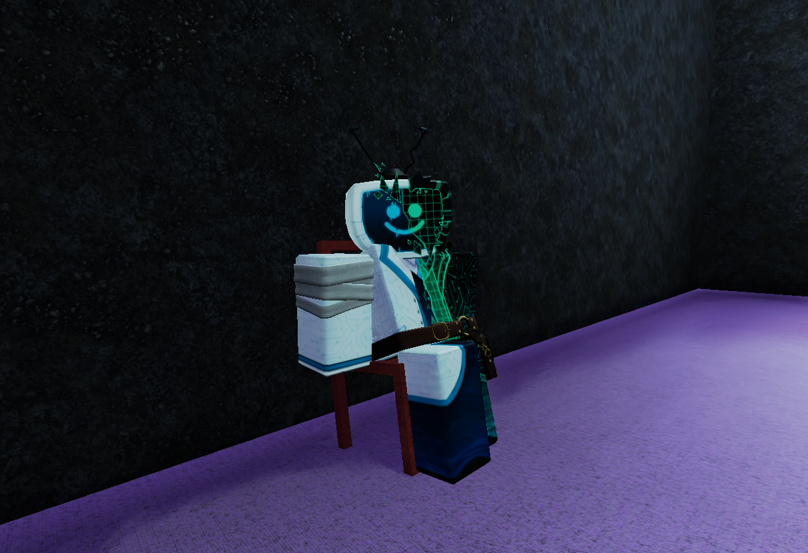

⌂

CorrupTee leaning and posing for the camera.
CorrupTee. Formerly a robot servant, due to a malfunction gained sentience.
His appearance is mostly show, as none of it is genuine corruption and is completely harmless.
Despite that he attempts to be seen as menacing, often acting rude or mean to others.
Believe it or not he's actually very nice once you get to know him. -Manatee